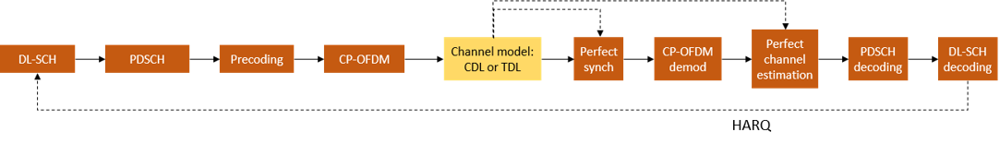
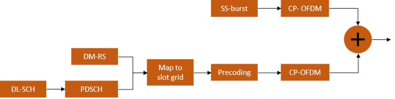
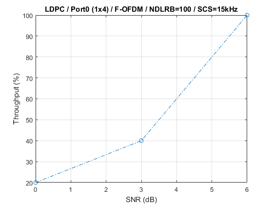
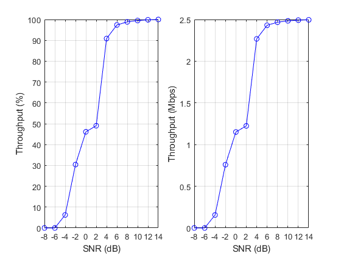

3GPP 5G NR PDSCH Throughput Simulation
This example measures the PDSCH throughput of a 5G link, as defined by the 3GPP NR standard. The example supports the 5G NR DL-SCH, PDSCH precoding, and 5G subcarrier spacings and bandwidths. The transmitter model includes 5G PDSCH DM-RS and SS burst. Both CDL and TDL propagation channels are supported.
Contents
Introduction
This example measures the PDSCH throughput of a 5G link, as defined by the 3GPP NR standard V15.0 [ 1 ], [ 2 ], [ 3 ], [ 4 ].
The following 5G NR features are implemented:
- 5G DL-SCH transport channel coding
- 5G PDSCH DM-RS generation
- SS burst generation (PSS/SSS/PBCH/PBCH DM-RS)
- NR subcarrier spacing and frame numerologies (2^n * 15kHz) for normal and extended cyclic prefix
- Support for 5G bandwidths
- 5G CP-OFDM, with the option of W-OFDM (WOLA-OFDM) and F-OFDM (Filtered OFDM)
- TDL and CDL propagation channel models
The main features of the simulation are:
- DL-SCH can be switched between 5G NR (LDPC) and LTE (turbo)
- PDSCH non-codebook based precoding using SVD
- Slot wise and non slot wise PDSCH and DM-RS mapping
- SS burst generation (cases A-E, SS/PBCH block bitmap control)
- NR subcarrier spacings and frame numerologies
- CP-OFDM, F-OFDM and WOLA-OFDM waveform selection
- TDL or CDL channel selection
- Perfect synchronization and channel estimation
The figure below shows the processing chain implemented. For clarity, the DM-RS and SS burst generation have been omitted.

Note that perfect synchronization and perfect channel knowledge are assumed, i.e. SS/PBCH block and PDSCH DM-RS signals are not used at the receiver. In this example, the PDSCH implementation uses the LTE PDSCH configured for non-codebook based precoding and LTE PDSCH scrambling. A single precoding matrix for the whole PDSCH allocation is determined using SVD by averaging the channel estimate across all allocated PDSCH PRBs. Therefore for large PDSCH allocations i.e. occupying a wide bandwidth, the single precoding matrix may not be well matched to the channel across all frequencies, resulting in performance degradation. There is no beamforming on the SS/PBCH blocks in the SS burst.
Simulation Length and SNR Points
Set the length of the simulation in terms of the number of 10ms frames. Set the SNR points to simulate.
simParameters = []; % Clear simParameters variable simParameters.NFrames = 2; % Number of 10ms frames simParameters.SNRIn = [-5 0 5]; % SNR range
gNodeB and PDSCH Configuration
Set the key parameters of the simulation. These include:
- The bandwidth in resource blocks (12 subcarriers per resource block).
- Subcarrier spacing: 15, 30, 60, 120, 240, 480 (kHz)
- Waveform: 'CP-OFDM', 'F-OFDM' or 'W-OFDM'
- DC subcarrier flag
A substructure containing the DL-SCH and PDSCH parameters is also specified. This includes:
- Target code rate
- Transport channel coding: 'LDPC', 'Turbo'
- Allocated resource blocks (PRBSet)
- Modulation scheme: 'QPSK', '16QAM', '64QAM', '256QAM'
- Number of layers
- Number of transmit antennas
- PDSCH mapping type
- DM-RS configuration parameters
Other simulation wide parameters are:
- Propagation channel model: 'TDL' or 'CDL'
- Number of receive antennas
- SS burst configuration parameters. Note that the SS burst generation can be disabled by setting the SSBTransmitted field to [0 0 0 0].
% Set waveform type and PDSCH numerology (SCS and CP type) simParameters.NDLRB = 100; % Bandwidth in number of resource blocks (20MHz at 15kHz SCS) simParameters.SubcarrierSpacing = 15; % 15, 30, 60, 120, 240, 480 (kHz) simParameters.WaveformType = 'CP-OFDM'; % 'CP-OFDM', 'W-OFDM' or 'F-OFDM' simParameters.CyclicPrefix = 'Normal'; % 'Normal' or 'Extended' simParameters.UseDCSubcarrier = 'On'; % 'On' or 'Off' simParameters.NCellID = 1; % Cell identity % DL-SCH/PDSCH parameters simParameters.PDSCH.TargetCodeRate = 0.5; % Code rate used to calculate transport block sizes simParameters.PDSCH.CodingType = 'LDPC'; % Set to 'LDPC' for 5G DL-SCH or 'Turbo' for LTE DL-SCH simParameters.PDSCH.PRBSet = 8:15; % PDSCH PRB allocation simParameters.PDSCH.SymbolSet = 0:13; % PDSCH symbol allocation in slot simParameters.PDSCH.Modulation = '16QAM'; % 'QPSK', '16QAM', '64QAM', '256QAM' simParameters.PDSCH.NLayers = 2; % Number of PDSCH layers simParameters.PDSCH.NTxAnts = 8; % Number of PDSCH transmission antennas simParameters.PDSCH.EnableHARQ = true; % Enable/disable HARQ, if disabled, single transmission with RV=0, i.e. no retransmissions % DM-RS configuration (TS 38.211 section 7.4.1.1) simParameters.PDSCH.PortSet = [0,2]; % DM-RS ports to use for the layers simParameters.PDSCH.PDSCHMappingType = 'A'; % PDSCH mapping type ('A'(slot-wise),'B'(non slot-wise)) simParameters.PDSCH.DL_DMRS_typeA_pos = 2; % Mapping type A only. First DM-RS symbol position (2,3) simParameters.PDSCH.DL_DMRS_max_len = 1; % Number of front-loaded DM-RS symbols (1(single symbol),2(double symbol)) simParameters.PDSCH.DL_DMRS_add_pos = 0; % Additional DM-RS symbol positions (max range 0...3) simParameters.PDSCH.DL_DMRS_config_type = 2; % DM-RS configuration type (1,2) simParameters.PDSCH.NIDNSCID = 1; % Scrambling identity (0...65535) simParameters.PDSCH.NSCID = 0; % Scrambling initialization (0,1) % Reserved PRB patterns (for CORESETs, forward compatibility etc) simParameters.PDSCH.Reserved.Symbols = []; % Reserved PDSCH symbols simParameters.PDSCH.Reserved.PRB = []; % Reserved PDSCH PRBs simParameters.PDSCH.Reserved.Period = []; % Periodicity of reserved resources % Define the propagation channel type and number of receive antennas simParameters.ChannelType = 'CDL'; % 'CDL' or 'TDL' simParameters.NRxAnts = 2; % Number of receive antennas at UE % SS burst configuration simParameters.SSBurst.BurstType = 'CaseB'; % 30kHz subcarrier spacing simParameters.SSBurst.SSBTransmitted = [0 1 0 1]; % Bitmap indicating blocks transmitted in the burst simParameters.SSBurst.SSBPeriodicity = 20; % SS burst set periodicity in ms (5, 10, 20, 40, 80, 160)
Additional parameters can be set depending on the type of modulation waveform used.
For W-OFDM you can specify:
- The window roll-off factor
- The windowing function samples. This parameter is optional and defaults to root raised cosine if unspecified
For F-OFDM you can specify:
- The filter length
- The tone offset
For more information on how to parameterize the different waveforms see the help for h5gOFDMModulate and [ 5 ].
% W-OFDM specific parameters simParameters.Alpha = 0.0125; % F-OFDM specific parameters simParameters.FilterLength = 513; simParameters.ToneOffset = 2.5;
Calculate the 5G standard defined TBS, given the PDSCH configuration
% Create gNodeB configuration structure 'gnb' and PDSCH configuration % structure 'pdsch' gnb = simParameters; pdsch = simParameters.PDSCH; % Get PDSCH resourcing information [~,~,~,pdschIndicesInfo] = h5gPDSCHResources(gnb,pdsch); Xoh_PDSCH = 0; % The Xoh-PDSCH overhead value is taken to be 0 here tbs = h5gPDSCHTBS(pdsch,pdschIndicesInfo.NREPerPRB-Xoh_PDSCH); % Create a vector of TBSs, one per group of 10 slots, since the HARQ % processing in this example uses LTE oriented HARQ management code trBlkSizes = tbs*ones(1,10);
Propagation Channel Model Configuration
Create the channel model object. Both CDL and TDL channel models are supported [ 6 ].
nTxAnts = simParameters.PDSCH.NTxAnts; nRxAnts = simParameters.NRxAnts; if strcmpi(simParameters.ChannelType,'CDL') channel = nr5gCDLChannel; % CDL channel object % Use CDL-C model (Urban macrocell model (R1-161736, R1-162960)) channel.DelayProfile = 'CDL-C'; channel.DelaySpread = 300e-9; % Turn the overall number of transmit antennas into a specific antenna % panel array geometry % % Table of antenna panel array configurations % M: no. of rows in each antenna panel % N: no. of columns in each antenna panel % P: no. of polarizations (1 or 2) % Mg: no. of rows in the array of panels % Ng: no. of columns in the array of panels % Row format: [M N P Mg Ng] antarrays = ... [1 1 1 1 1; % 1 ants 1 1 2 1 1; % 2 ants 2 1 2 1 1; % 4 ants 2 2 2 1 1; % 8 ants 2 4 2 1 1; % 16 ants 4 4 2 1 1; % 32 ants 4 4 2 1 2; % 64 ants 4 8 2 1 2; % 128 ants 4 8 2 2 2; % 256 ants 8 8 2 2 2; % 512 ants 8 16 2 2 2]; % 1024 ants antselected = 1+fix(log2(nTxAnts)); channel.TransmitAntennaArray.Size = antarrays(antselected,:); % Setup the receive antenna geometry if nRxAnts == 1 % In the following settings, the number of rows in antenna array, % columns in antenna array, polarizations, row array panels and the % columns array panels are all 1 channel.ReceiveAntennaArray.Size = ones(1,5); else % In the following settings, the no. of rows in antenna array is % nRxAntennas/2, the no. of columns in antenna array is 1, the no. % of polarizations is 2, the no. of row array panels is 1 and the % no. of column array panels is 1. The values can be changed to % create alternative antenna setups channel.ReceiveAntennaArray.Size = [fix(nRxAnts/2),1,2,1,1]; end elseif strcmpi(simParameters.ChannelType,'TDL') channel = nr5gTDLChannel; % TDL channel object % Set the channel geometry channel.DelayProfile = 'TDL-C'; channel.DelaySpread = 300e-9; channel.NumTransmitAntennas = nTxAnts; channel.NumReceiveAntennas = nRxAnts; channel.PathGainsOutputPort = true; % Provide the path gains as an output else error('ChannelType parameter field must be either CDL or TDL'); end
The sampling rate for the channel model is set using the value returned from h5gOFDMInfo.
waveformInfo = h5gOFDMInfo(gnb); channel.SampleRate = waveformInfo.SamplingRate;
Get the maximum number of delayed samples by a channel multipath component. This is calculated from the channel path with the largest delay and the implementation delay of the channel filter. This is required later to flush the channel filter to obtain the received signal.
chInfo = info(channel); maxChDelay = ceil(max(chInfo.PathDelays*channel.SampleRate)) + chInfo.ChannelFilterDelay;
Reserve PDSCH Resources Corresponding to SS burst
The figure below shows the signals and channels generated in the example.

This section shows how to reserve resources for the transmission of the SS burst.
% Create SS burst waveform and information structure and display a plot % showing the SS burst content (in the SS burst numerology) ssburst = simParameters.SSBurst; ssburst.DisplayBurst = true; [ssbWaveform,~,ssbInfo] = h5gSSBurst(gnb,ssburst); % Demodulate SS burst waveform using data numerology - note that depending % on subcarrier spacings, the SS burst content may not be orthogonal with % the data subcarriers ssbGrid = h5gOFDMDemodulate(gnb,ssbWaveform); % Map the occupied subcarriers and transmitted symbols of the SS burst % (defined in the SS burst numerology) to PDSCH PRBs and symbols in the % data numerology [mappedPRB,mappedSymbols] = mapNumerology(ssbInfo.OccupiedSubcarriers,ssbInfo.SymbolsTransmitted,ssbInfo.SubcarrierSpacing,gnb.SubcarrierSpacing); % Configure the PDSCH to reserve these resources so that the PDSCH % transmission does not overlap the SS burst reservation.Symbols = mappedSymbols; reservation.PRB = mappedPRB; reservation.Period = simParameters.SSBurst.SSBPeriodicity * waveformInfo.SymbolsPerSubframe; pdsch.Reserved(end+1) = reservation; % Create a plot showing the PDSCH, PDSCH DM-RS and SS burst resources plotPDSCHResources(gnb,pdsch,ssbGrid);

Processing Loop
To determine the throughput at each SNR point, the PDSCH data is analyzed per transmission instance using the following steps:
- Update current HARQ process. The HARQ process either carries new transport data or a retransmission of previously sent transport data depending upon the acknowledgment (ACK) or negative acknowledgment (NACK). ACK or NACKs are not transmitted in this example, instead this is signaled using the CRC results. All this is handled by the HARQ scheduler, hHARQScheduling.m. The PDSCH data is updated based on the HARQ state.
- Waveform generation. The generated grid is then OFDM modulated.
- Noisy channel modeling. The waveform is passed through a CDL or TDL fading channel. AWGN is added.
- Perform synchronization and OFDM demodulation. Information returned by the channel is used for perfect synchronization. The synchronized signal is then OFDM demodulated.
- Perform perfect channel estimation. Perfect channel estimation is used.
- Precoding matrix calculation. The precoding matrix W for the next transmission is calculated using singular value decomposition (SVD). A single matrix is obtained for the full allocation by averaging the channel conditions. Therefore, for a channel with frequency selectivitiy, W could be less accurate for larger allocated bandwidths.
- Decode the PDSCH. The recovered PDSCH symbols for all transmit and receive antenna pairs, along with a noise estimate, are demodulated and descrambled by h5gPDSCHDecode to obtain an estimate of the received codewords. Note that this function is a modified version of ltePDSCHDecode which creates an LLR output which is compatible with the LDPC decoder used in the 5G DL-SCH decoding.
- Decode the Downlink Shared Channel (DL-SCH) and store the block CRC error for a HARQ process. The vector of decoded soft bits is passed to h5gDLSCHDecode which decodes the codeword and returns the block CRC error used to determine the throughput of the system. The contents of the updated soft buffer, harqProc(harqIdx).decState, are available at the output of this function to be used when decoding the next retransmission, if required.
% Initialize variables used in the simulation and analysis % Array to store the maximum throughput for all SNR points maxThroughput = zeros(length(simParameters.SNRIn),1); % Array to store the simulation throughput for all SNR points simThroughput = zeros(length(simParameters.SNRIn),1); % Specify additional required fields for PDSCH pdsch.TxScheme = 'Port7-14'; pdsch.RNTI = 1; % Set up Redundancy Version (RV) sequence, number of HARQ processes and % the sequence in which the HARQ processes are used if pdsch.EnableHARQ % In the final report of RAN WG1 meeting #91 (R1-1719301), it was % observed in R1-1717405 that if performance is the priority, [0 2 3 1] % should be used. If self-decodability is the priority, it should be % taken into account that the upper limit of the code rate at which % each RV is self-decodable is in the following order: 0>3>>2>1 rvSeq = [0 2 3 1]; else % HARQ disabled - single transmission with RV=0, no retransmissions rvSeq = 0; end pdsch.NHARQProcesses = 8; harqSequence = 1:pdsch.NHARQProcesses; for snrIdx = 1:numel(simParameters.SNRIn) % Set the random number generator settings to default values rng('default'); SNRdB = simParameters.SNRIn(snrIdx); fprintf('\nSimulating transmission scheme 1 (%dx%d) and %s (SCS=%dkHz) with %s channel at %gdB SNR for %d 10ms frame(s)\n',... nTxAnts,nRxAnts,gnb.WaveformType,gnb.SubcarrierSpacing, ... simParameters.ChannelType,SNRdB,simParameters.NFrames); % Initialize variables used in the simulation and analysis blkCRC = []; % Block CRC for all active PDSCH transmissions bitTput = []; % Number of successfully received bits per transmission txedTrBlkSizes = []; % Number of transmitted info bits per transmission % Initialize the state of all HARQ processes pdsch.TrBlkSizes = trBlkSizes; gnb.PDSCH = pdsch; harqProcesses = hNewHARQProcess(gnb); % Reset the channel so that each SNR point will experience the same % channel realization reset(channel); % Total number of OFDM symbols in the simulation period NSymbols = simParameters.NFrames * 10 * waveformInfo.SymbolsPerSubframe; % OFDM symbol number associated with start of each PDSCH transmission gnb.NSymbol = 0; % Running counter of the number of PDSCH transmission instances % The simulation will use this counter as the slot number for each % PDSCH npdsch = 0; % Index to the start of the current set of SS burst samples to be % transmitted. Also record which SS blocks in the burst are configured % for transmission, a bitmap of all zeros will be used to create a % waveform with the correct SSB periodicity ssbSampleIndex = 1; ssbTransmitted = ssburst.SSBTransmitted; ssburst.DisplayBurst = false; % Obtain a precoding matrix to be used in the transmission of the first % transport block estChannelGrid = getInitialChannelEstimate(gnb,pdsch,channel); wtx = getPrecodingMatrix(pdsch,estChannelGrid); while gnb.NSymbol < NSymbols % Set the current slot number pdsch.NSlot = npdsch; % Generate a new SS burst when necessary if (ssbSampleIndex==1) nsf = gnb.NSymbol / waveformInfo.SymbolsPerSubframe; ssburst.SSBTransmitted = ssbTransmitted * (mod(nsf,simParameters.SSBurst.SSBPeriodicity)==0); ssburst.NHalfFrame = mod(nsf / 5,2); [ssbWaveform,~,ssbInfo] = h5gSSBurst(gnb,ssburst); end % Get HARQ process index for the current PDSCH from HARQ index table harqProcIdx = harqSequence(mod(npdsch,length(harqSequence))+1); % Update current HARQ process information harqProcesses(harqProcIdx) = hHARQScheduling(harqProcesses(harqProcIdx),npdsch,rvSeq); % Extract the current PDSCH transport block size trBlk = trBlkSizes(:, mod(npdsch,size(trBlkSizes,2))+1).'; % Update the PDSCH transmission config from the HARQ process state pdsch = harqProcesses(harqProcIdx).txConfig; trdata = harqProcesses(harqProcIdx).data; % PDSCH resource element indices and PDSCH DM-RS [pdschIndices,dmrsIndices,dmrsSymbols,pdschIndicesInfo] = h5gPDSCHResources(gnb,pdsch); % Perform DL-SCH transport channel coding codedTrBlock = h5gDLSCH(gnb,pdsch,pdschIndicesInfo.G,trdata); % Use LTE PDSCH in beamforming mode to create the transmission % symbols, which requires some additional function-specific % parameters to be set gnb.CellRefP = 1; pdsch.W = wtx; % Update effective subframe number to be used to generate the LTE % PDSCH scrambling etc. For SCS > 15kHz (15kHz * 2^n) this will % compress the scrambling frame structure into periods of 1/(2^n) % milliseconds. The true 1ms subframe number will be: % fix(gnb.NSymbol/waveformInfo.symbolsPerSubframe) gnb.NSubframe = npdsch; pdschSymbols = ltePDSCH(gnb,pdsch,codedTrBlock); % PDSCH mapping in grid associated with PDSCH transmission period pdschGrid = zeros(waveformInfo.NSubcarriers,waveformInfo.SymbolsPerSlot,nTxAnts); [~,pdschAntIndices] = lteExtractResources(pdschIndices,pdschGrid); pdschGrid(pdschAntIndices) = pdschSymbols; % PDSCH DM-RS precoding and mapping for p = 1:size(dmrsSymbols,2) [~,dmrsAntIndices] = lteExtractResources(dmrsIndices(:,p),pdschGrid); pdschGrid(dmrsAntIndices) = pdschGrid(dmrsAntIndices) + dmrsSymbols(:,p) * wtx(p,:); end % OFDM modulation of associated resource elements txWaveform = h5gOFDMModulate(gnb, pdschGrid); % Add the appropriate portion of SS burst waveform to the % transmitted waveform Nt = size(txWaveform,1); txWaveform = txWaveform + ssbWaveform(ssbSampleIndex + (0:Nt-1),:); ssbSampleIndex = mod(ssbSampleIndex + Nt,size(ssbWaveform,1)); % Pass data through channel model. Append zeros at the end of the % transmitted waveform to flush channel content. These zeros take % into account any delay introduced in the channel. This is a mix % of multipath delay and implementation delay. This value may % change depending on the sampling rate, delay profile and delay % spread txWaveform = [txWaveform; zeros(maxChDelay, size(txWaveform,2))]; %#ok<AGROW> [rxWaveform,pathGains] = channel(txWaveform); % Calculate linear noise gain SNR = 10^(SNRdB/20); % Normalize noise power to take account of sampling rate, which is % a function of the IFFT size used in OFDM modulation N0 = 1/(sqrt(2.0*double(waveformInfo.Nfft))*SNR); % Create additive white Gaussian noise noise = N0*complex(randn(size(rxWaveform)),randn(size(rxWaveform))); % Add AWGN to the received time domain waveform rxWaveform = rxWaveform + noise; % Perfect synchronization. Use information provided by the channel % to find the strongest multipath component [offset,mag] = h5gPerfectTimingOffset(pathGains,chInfo,waveformInfo.SamplingRate); rxWaveform = rxWaveform(1+offset:end, :); % Perform OFDM demodulation on the received data to recreate the % resource grid rxGrid = h5gOFDMDemodulate(gnb, rxWaveform); % Perfect channel estimation, use the value of the path gains % provided by the channel % Get estimates for the transmission period of LTE PDSCH instance % (in terms of symbols, this is equivalent to an LTE subframe) estChannelGrid = h5gPerfectChannelEstimate(gnb,channel,pathGains,offset); % Noise estimation directly from the noise realization noiseGrid = h5gOFDMDemodulate(gnb, noise(1+offset:end ,:)); noiseEst = var(noiseGrid(:)); wtx = getPrecodingMatrix(pdsch,estChannelGrid); % Apply precoding to Hest % Linearize 4D matrix and reshape after multiplication K = size(estChannelGrid,1); Hest = reshape(estChannelGrid,K*waveformInfo.SymbolsPerSlot*nRxAnts,nTxAnts); Hest = Hest*pdsch.W.'; Hest = reshape(Hest,K,waveformInfo.SymbolsPerSlot,nRxAnts,pdsch.NLayers); % Get PDSCH resource elements from the received grid [pdschRx,pdschHest] = lteExtractResources(pdschIndices,rxGrid,Hest); % Decode LTE PDSCH physical channel % This uses a modified version of ltePDSCHDecode which creates % an LLR output which is compatible with the LDPC decoder used in % the 5G DL-SCH decoding [dlschBits,rxSymbols] = h5gPDSCHDecode(gnb,pdsch,pdschRx,pdschHest,noiseEst); % Decode the DL-SCH transport channel [decbits,harqProcesses(harqProcIdx).blkerr,harqProcesses(harqProcIdx).decState] = ... h5gDLSCHDecode(gnb,pdsch,trBlk,dlschBits,harqProcesses(harqProcIdx).decState); % Store values to calculate throughput (only for active PDSCH instances) if(any(trBlk) ~= 0) blkCRC = [blkCRC harqProcesses(harqProcIdx).blkerr]; %#ok<AGROW> bitTput = [bitTput trBlk.*(1-harqProcesses(harqProcIdx).blkerr)]; %#ok<AGROW> txedTrBlkSizes = [txedTrBlkSizes trBlk]; %#ok<AGROW> end % Update starting symbol number of next PDSCH transmission gnb.NSymbol = gnb.NSymbol + size(pdschGrid,2); % Update count of overall number of PDSCH transmissions npdsch = npdsch + 1; % Display transport block error information per codeword managed by current HARQ process fprintf('\n(%3.2f%%) HARQ Proc %d: ', 100*gnb.NSymbol/NSymbols,harqProcIdx); estrings = {'passed','failed'}; rvi = harqProcesses(harqProcIdx).txConfig.RVIdx; for cw=1:length(rvi) cwrvi = rvi(cw); % Create a report on the RV state given position in RV sequence and decoding error if cwrvi == 1 ts = sprintf('Initial transmission (RV=%d)',rvSeq(cw,cwrvi)); else ts = sprintf('Retransmission #%d (RV=%d)',cwrvi-1,rvSeq(cw,cwrvi)); end fprintf('CW%d - %s %s. ',cw-1,ts,estrings{1+harqProcesses(harqProcIdx).blkerr(cw)}); end end % Calculate maximum and simulated throughput maxThroughput(snrIdx) = sum(txedTrBlkSizes); % Max possible throughput simThroughput(snrIdx) = sum(bitTput,2); % Simulated throughput % Display the results dynamically in the command window fprintf([['\n\nThroughput(Mbps) for ', num2str(simParameters.NFrames) ' frame(s) '],... '= %.4f\n'], 1e-6*simThroughput(snrIdx)/(simParameters.NFrames*10e-3*(2/waveformInfo.SlotsPerSubframe))); fprintf(['Throughput(%%) for ', num2str(simParameters.NFrames) ' frame(s) = %.4f\n'],... simThroughput(snrIdx)*100/maxThroughput(snrIdx)); end
Simulating transmission scheme 1 (8x2) and CP-OFDM (SCS=15kHz) with CDL channel at -5dB SNR for 2 10ms frame(s) (5.00%) HARQ Proc 1: CW0 - Initial transmission (RV=0) failed. (10.00%) HARQ Proc 2: CW0 - Initial transmission (RV=0) failed. (15.00%) HARQ Proc 3: CW0 - Initial transmission (RV=0) failed. (20.00%) HARQ Proc 4: CW0 - Initial transmission (RV=0) failed. (25.00%) HARQ Proc 5: CW0 - Initial transmission (RV=0) failed. (30.00%) HARQ Proc 6: CW0 - Initial transmission (RV=0) failed. (35.00%) HARQ Proc 7: CW0 - Initial transmission (RV=0) failed. (40.00%) HARQ Proc 8: CW0 - Initial transmission (RV=0) failed. (45.00%) HARQ Proc 1: CW0 - Retransmission #1 (RV=2) failed. (50.00%) HARQ Proc 2: CW0 - Retransmission #1 (RV=2) failed. (55.00%) HARQ Proc 3: CW0 - Retransmission #1 (RV=2) failed. (60.00%) HARQ Proc 4: CW0 - Retransmission #1 (RV=2) failed. (65.00%) HARQ Proc 5: CW0 - Retransmission #1 (RV=2) failed. (70.00%) HARQ Proc 6: CW0 - Retransmission #1 (RV=2) failed. (75.00%) HARQ Proc 7: CW0 - Retransmission #1 (RV=2) failed. (80.00%) HARQ Proc 8: CW0 - Retransmission #1 (RV=2) failed. (85.00%) HARQ Proc 1: CW0 - Retransmission #2 (RV=3) failed. (90.00%) HARQ Proc 2: CW0 - Retransmission #2 (RV=3) failed. (95.00%) HARQ Proc 3: CW0 - Retransmission #2 (RV=3) failed. (100.00%) HARQ Proc 4: CW0 - Retransmission #2 (RV=3) failed. Throughput(Mbps) for 2 frame(s) = 0.0000 Throughput(%) for 2 frame(s) = 0.0000 Simulating transmission scheme 1 (8x2) and CP-OFDM (SCS=15kHz) with CDL channel at 0dB SNR for 2 10ms frame(s) (5.00%) HARQ Proc 1: CW0 - Initial transmission (RV=0) failed. (10.00%) HARQ Proc 2: CW0 - Initial transmission (RV=0) failed. (15.00%) HARQ Proc 3: CW0 - Initial transmission (RV=0) failed. (20.00%) HARQ Proc 4: CW0 - Initial transmission (RV=0) failed. (25.00%) HARQ Proc 5: CW0 - Initial transmission (RV=0) failed. (30.00%) HARQ Proc 6: CW0 - Initial transmission (RV=0) failed. (35.00%) HARQ Proc 7: CW0 - Initial transmission (RV=0) failed. (40.00%) HARQ Proc 8: CW0 - Initial transmission (RV=0) failed. (45.00%) HARQ Proc 1: CW0 - Retransmission #1 (RV=2) passed. (50.00%) HARQ Proc 2: CW0 - Retransmission #1 (RV=2) passed. (55.00%) HARQ Proc 3: CW0 - Retransmission #1 (RV=2) passed. (60.00%) HARQ Proc 4: CW0 - Retransmission #1 (RV=2) passed. (65.00%) HARQ Proc 5: CW0 - Retransmission #1 (RV=2) passed. (70.00%) HARQ Proc 6: CW0 - Retransmission #1 (RV=2) passed. (75.00%) HARQ Proc 7: CW0 - Retransmission #1 (RV=2) passed. (80.00%) HARQ Proc 8: CW0 - Retransmission #1 (RV=2) passed. (85.00%) HARQ Proc 1: CW0 - Initial transmission (RV=0) failed. (90.00%) HARQ Proc 2: CW0 - Initial transmission (RV=0) failed. (95.00%) HARQ Proc 3: CW0 - Initial transmission (RV=0) failed. (100.00%) HARQ Proc 4: CW0 - Initial transmission (RV=0) failed. Throughput(Mbps) for 2 frame(s) = 0.9984 Throughput(%) for 2 frame(s) = 40.0000 Simulating transmission scheme 1 (8x2) and CP-OFDM (SCS=15kHz) with CDL channel at 5dB SNR for 2 10ms frame(s) (5.00%) HARQ Proc 1: CW0 - Initial transmission (RV=0) passed. (10.00%) HARQ Proc 2: CW0 - Initial transmission (RV=0) passed. (15.00%) HARQ Proc 3: CW0 - Initial transmission (RV=0) passed. (20.00%) HARQ Proc 4: CW0 - Initial transmission (RV=0) passed. (25.00%) HARQ Proc 5: CW0 - Initial transmission (RV=0) passed. (30.00%) HARQ Proc 6: CW0 - Initial transmission (RV=0) passed. (35.00%) HARQ Proc 7: CW0 - Initial transmission (RV=0) passed. (40.00%) HARQ Proc 8: CW0 - Initial transmission (RV=0) passed. (45.00%) HARQ Proc 1: CW0 - Initial transmission (RV=0) passed. (50.00%) HARQ Proc 2: CW0 - Initial transmission (RV=0) passed. (55.00%) HARQ Proc 3: CW0 - Initial transmission (RV=0) passed. (60.00%) HARQ Proc 4: CW0 - Initial transmission (RV=0) passed. (65.00%) HARQ Proc 5: CW0 - Initial transmission (RV=0) passed. (70.00%) HARQ Proc 6: CW0 - Initial transmission (RV=0) passed. (75.00%) HARQ Proc 7: CW0 - Initial transmission (RV=0) passed. (80.00%) HARQ Proc 8: CW0 - Initial transmission (RV=0) passed. (85.00%) HARQ Proc 1: CW0 - Initial transmission (RV=0) passed. (90.00%) HARQ Proc 2: CW0 - Initial transmission (RV=0) passed. (95.00%) HARQ Proc 3: CW0 - Initial transmission (RV=0) passed. (100.00%) HARQ Proc 4: CW0 - Initial transmission (RV=0) passed. Throughput(Mbps) for 2 frame(s) = 2.4960 Throughput(%) for 2 frame(s) = 100.0000
Results
Display the measured throughput. This is calculated as the percentage of the maximum possible throughput of the link given the available resources for data transmission.
figure; plot(simParameters.SNRIn,simThroughput*100./maxThroughput,'o-.') xlabel('SNR (dB)'); ylabel('Throughput (%)'); grid on; title(sprintf('%s / (%dx%d) / %s / NDLRB=%d / SCS=%dkHz',... pdsch.CodingType,nTxAnts,nRxAnts,gnb.WaveformType, ... gnb.NDLRB,gnb.SubcarrierSpacing)); % Bundle key parameters and results into a combined structure for recording simResults.simParameters = simParameters; simResults.simThroughput = simThroughput;

The figure below shows the throughput obtained when simulating 1000 frames.

Appendix
This example uses the following helper functions:
- hNewHARQProcess.m
- hHARQScheduling.m
- h5gOFDMModulate.m
- h5gOFDMDemodulate.m
- h5gOFDMInfo.m
- h5gDLSCHInfo.m
- h5gPDSCHTBS.m
- h5gPDSCHResources.m
- h5gDLSCH.m
- h5gDLSCHDecode.m
- h5gPDSCHDecode.m
- h5gCodeBlockSegment.m
- h5gCodeBlockDesegment.m
- h5gLDPCEncode.m
- h5gLDPCDecode.m
- h5gRateMatchLDPC.m
- h5gRateRecoverLDPC.m
- h5gLDPCParityCheckMatrix.m
- h5gSSBurst.m
- h5gPerfectTimingOffset.m
- h5gPerfectChannelEstimate.m
Selected Bibliography
- 3GPP TS 38.211 V15.0 "NR; Physical channels and modulation"
- 3GPP TS 38.212 V15.0 "NR; Multiplexing and channel coding"
- 3GPP TS 38.213 V15.0 "NR; Physical layer procedures for control"
- 3GPP TS 38.214 V15.0 "NR; Physical layer procedures for data"
- R1-166999, "Detailed configuration of F-OFDM and W-OFDM for LLS evaluation", Spreadtrum Communications, 3GPP RAN WG1 #86, August 2016
- 3GPP TR 38.901 V14.3 "Study on channel model for frequencies from 0.5 to 100 GHz"
function estChannelGrid = getInitialChannelEstimate(gnb,pdsch,channel) ofdmInfo = h5gOFDMInfo(gnb); sr = ofdmInfo.SamplingRate; chInfo = info(channel); maxChDelay = ceil(max(chInfo.PathDelays*channel.SampleRate)) + chInfo.ChannelFilterDelay; % Temporary waveform (only needed for the sizes) tmpWaveform = zeros((ofdmInfo.SamplesPerSubframe/ofdmInfo.SlotsPerSubframe)+maxChDelay,pdsch.NTxAnts); % Filter through channel [~,pathGains] = channel(tmpWaveform); % Perfect timing synch offset = h5gPerfectTimingOffset(pathGains,chInfo,sr); % Perfect channel estimate estChannelGrid = h5gPerfectChannelEstimate(gnb,channel,pathGains,offset); end function wtx = getPrecodingMatrix(pdsch,hestGrid) % Allocated subcarrier indices allocSc = (1:12)' + 12*pdsch.PRBSet(:).'; allocSc = allocSc(:); % Average channel estimate [~,~,R,P] = size(hestGrid); estAllocGrid = hestGrid(allocSc,:,:,:); Hest = permute(mean(reshape(estAllocGrid,[],R,P)),[2 3 1]); % SVD decomposition [~,~,V] = svd(Hest); wtx = V(:,1:pdsch.NLayers).'; end function [mappedPRB,mappedSymbols] = mapNumerology(subcarriers,symbols,fs,ft) mappedPRB = unique(fix(subcarriers*fs/(ft*12)),'stable'); if (ft < fs) % If ft/fs < 1, reduction mappedSymbols = unique(fix(symbols*ft/fs),'stable'); else % Else, repetition by ft/fs mappedSymbols = reshape((0:(ft/fs-1))' + symbols(:)'*ft/fs,1,[]); end end function plotPDSCHResources(gnb,pdsch,ssbGrid) % Create an empty resource grid spanning one slot waveformInfo = h5gOFDMInfo(gnb); grid = zeros(waveformInfo.NSubcarriers,waveformInfo.SymbolsPerSlot,pdsch.NLayers); % Trim the SS burst grid to contain the same number of OFDM symbols ssbGrid= ssbGrid(:,1:size(grid,2)); % Create PDSCH and PDSCH DM-RS indices [pdschIndices,pdschDmrsIndices] = h5gPDSCHResources(gnb,pdsch); % Mark PDSCH and PDSCH DM-RS positions in the grid grid(pdschIndices) = 2; grid(pdschDmrsIndices) = 3; % Mark SS burst positions in the grid grid(abs(ssbGrid)>=0.5) = grid(abs(ssbGrid)>=0.5) + 1; grid(abs(ssbGrid)<0.5 & abs(ssbGrid)>=0.1) = grid(abs(ssbGrid)<0.5 & abs(ssbGrid)>=0.1) + 0.3; grid(abs(ssbGrid)<0.1 & abs(ssbGrid)>0.03) = grid(abs(ssbGrid)<0.1 & abs(ssbGrid)>0.03) + 0.1; % Plot the grid figure; imagesc(abs(grid(:,:,1))); axis xy; % Create a legend for the different channels / signals, this is % achieved by drawing off-plot patches with the appropriate colors % then adding a legend hold on; patch([-2 -3 -3 -2],[-2 -2 -3 -3],1); patch([-2 -3 -3 -2],[-2 -2 -3 -3],2); patch([-2 -3 -3 -2],[-2 -2 -3 -3],3); legend('SS burst','PDSCH','PDSCH DM-RS'); % Add axis labels and title ylabel('Subcarriers'); xlabel('OFDM symbols'); title(sprintf('PDSCH / DM-RS / SS burst, SCS=%dkHz, NDLRB=%d, Port=%d',gnb.SubcarrierSpacing,gnb.NDLRB,1000 + pdsch.PortSet(1))); drawnow; end